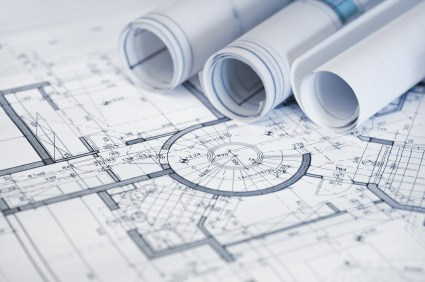

Kas ir sistēmu arhitekts?
Pieredzējis izstrādātājs? Vadošais speciālists? Autoritāte? Statuss? 
Mani šie jautājumi sāka mocīt pirms nepilniem diviem gadiem, kad es ieguvu šādu nosaukumu. Varbūt bija jāsāk ar nedaudz citu jautājumu? Vai mēs apzinamies kas tad īsti ir “arhitektūra” programmu izstrādē? Man, un drošivien daudziem citiem, termins “arhitektūra” asociējas ar būvēm, pilsētām, tiltiem un citām konstrukcijām. Attiecīgi - ar kaut ko, kas tiek būvēts. Kāpēc gan nevarētu attiecināt terminu “arhitektūra” ar tieši tādu pašu nozīmi programmatūras izstrādē? Var taču teikt, ka programmatūru arī “būvē”, vai ne? Tomēr atšķirības ir principālas. Galvenā - programmatūru ietekmējošās blakuslietas ap to mainās pilnīgi citā ātrumā un tādejādi programmatūras ražošanā arhitektūra ir stipri mainīgāka. Ja programmatūras arhitektūra var būtiski mainīties katru gadu, mēnesi vai pat nedēļu, tad tādām nopietnām inženierbūvēm arhitektūra mainās tikai plānošanas un rasēšanas stadijās. Līdz pusei uzbūvētam debesskrāpim neviens taču vairs neiedomāsies pamainīt nesošo konstrukciju plānu vai pamatus, vai ne?
Un iemesls tam ir gaužām vienkāršs - fiziskām būvēm ir jāseko fizikas likumiem, programmām nav.
Mūsdienu programmatūras izstrādē lietas, kuras varētu saukt par “arhitektūru”, ir spiestas mainīties strauji, tas ir izdzīvošanas jautājums. Ja tu nespēj radoši pielāgoties jaunām vai mainītām prasībām, lielas izdzīvošnas iespējas nepastāv. Te gan ir jāatceras, ka termini “sistēmu arhitekts” un “programmatūras arhitektūra” ir tik seni kā šī industrija un attiecīgi radušies laikmetā, kad programmatūru izstrādāja ne iteratīvās metodēs, tādās kā waterfall, kur tiešām šis process ir tāds pats kā inženierbūvēs. Tādejādi šo terminu formulējumi, iespējams, daudzviet joprojām tiek lietoti to senajā izpratnē.
Tādejādi, mūsdienās piekopjot iteratīvas, agile, lean utt. programmizstrādes prakses, ir jāpārcilā jautājums “kas ir sistēmu arhitekts?”. Bet lai pārcilātu to jautājumu, vispirms ir atkal jāpārcilā jautājums - kas tad ir sistēmu arhitektūra mūsdienīgā izstrādes modelī. Es nevarēju atrast labāku skaidrojumu kā Martin Fowler to ir aprakstījis savā rakstā “Who needs an architect?” - Sistēmas arhitektūra ir vadošo ekspertu kopējā sapratne par kopējo sistēmas dizainu.
Eureka!
Arhitektūra nav tikai kāda shēma vai diagramma vai dokuments. Shēmas, diagrammas un dokumenti ir tikai tās reprezentācija. Kas tieši ir arhitektūras sastāvā? Lietas, kas izstrādātājiem un ekspertiem liekas svarīgas. Un reducējot šo vēl tālāk - sistēmu arhitektūra ir svarīgo lietu kopums. Īsi un vienkārši.
Un tagad atpakaļ pie arhitekta lomas. Kas tad pie tāda arhitektūras formulējuma būtu jādara pašam arhitektam? Viedokļi ir daudz un dažādi, tomēr visus var iedalīt pa lielam divās kategorijās. Ir tādi, kas uzskata, ka arhitektam ir jābūt viennozīmīgai autoritātei un lēmuma pieņēmējam. Arhitekta lēmums ir galīgs un saistošs pārējiem iesaistītajiem. Ir citi, kas uzskata, ka arhitekts nedrīkst būt diktators, arhitekts drīzāk ir konsultatīva instance, arhitektam ir jāuzklausa visi iesaistītie un uz tā bāzes jāveido savi lēmumi un ieteikumi.
Man tomēr neviena no šīm interpretācijām neliekas pietiekoši “moderna”, abās ir zināmas atskaņas no “senajām izstrādes metodēm”. Mūsdienās ir svarīgi nodrošināt, ka programmatūras izstrāde notiek pareizajā virzienā, nodrošinot laicīgi stratēģiskus lēmumus par “svarīgajām lietām” (lasi - arhitektūru), un tam ir jānotiek nepārtraukti, nevis tikai kādā sākotnējā izstrādes fāzē. Modernam sistēmu arhitektam būtu jābūt duālas dabas - ir jāspēj pieņemt autoritatīvi lēmumi un atbildēt par tiem, kā arī ir jāveics izglītojošas funkcijas - šī kopējā sapratne par svarīgo lietu izskatu ir jāsludina, par to ir jārunā. Modernam arhitektam ir jābūt iesaistītam izstrādes procesā gandrīz tikpat dziļi, kā jebkuram ierindas programmētājam, arhitekts nedrīkst atrasties aiz stikla sienas sterilā vidē pie savām shēmām un diagrammām.
Un nobeidzot, varbūt atsevišķa arhitekta pozīcija nemaz nav nepieciešama? Vai gadījumā augstāk aprakstītais neatbilst vadošo vai vecāko speciālistu amata pienākumiem?